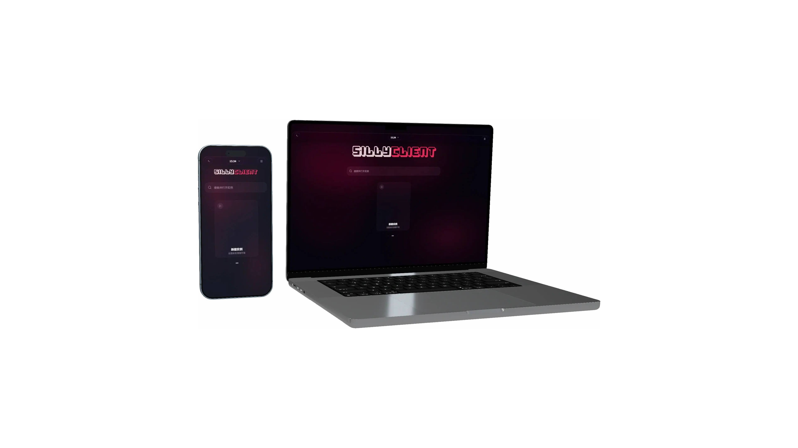
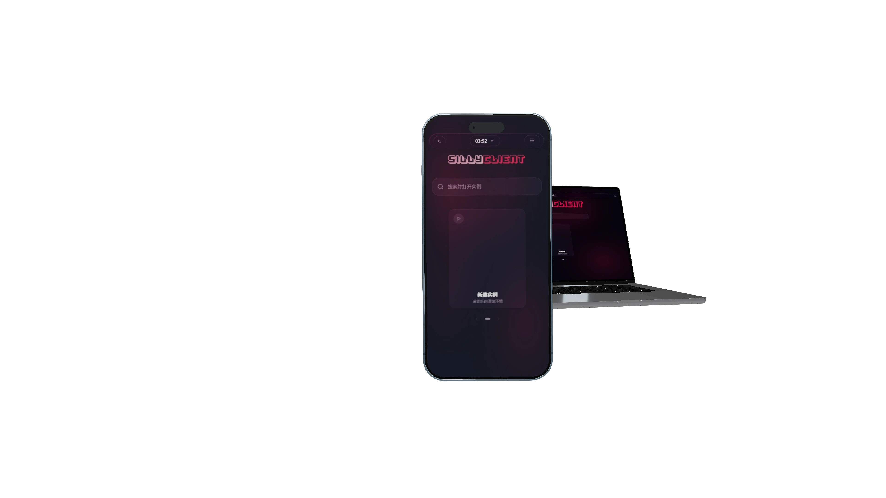
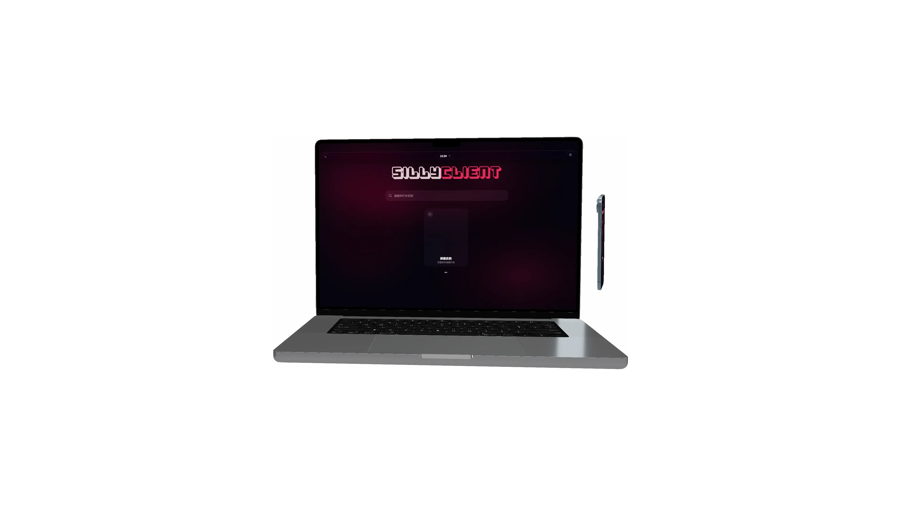

01 / 04
完整演示，从安装到使用。
通过真实操作了解实例创建、快捷控制、个性化设置与手机端远程连接。
正在载入视频
电脑端完整体验
实时 3D、镜头交互与完整转场将在电脑浏览器中启用。移动端继续提供轻量预览。
轻触屏幕继续
开源 SillyTavern 客户端
SillyClient 是面向 Android 与 Windows 的开源 SillyTavern 客户端。
它将本地实例、远程服务、运行状态与日志集中在同一套控制台，并随安装包提供所需运行环境。无论随身使用还是桌面常驻，都能从同一入口启动和管理 SillyTavern。

01 / 产品体验
手机与电脑共享同一套控制台，运行环境分别由 Kotlin 与 Electron 接管。界面保持一致，各端也保留原生能力。


Kotlin 宿主管理实例目录、进程与内置 Node.js 生命周期；共享前端通过平台接口读取状态、日志和服务地址。
Electron 主进程负责实例文件、Node.js 运行时与窗口调度，控制台和 SillyTavern 内容窗口彼此独立。
Android 与 Windows 使用同一套 React 控制台和平台契约，交互、状态模型与版本能力由同一份源码维护。
02 / 演示与源码
showcase / 完整演示
先通过完整演示了解 SillyClient，再查看共享控制台与双端宿主的核心实现。